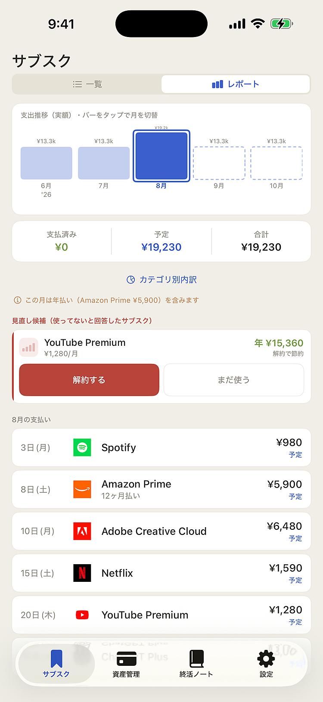
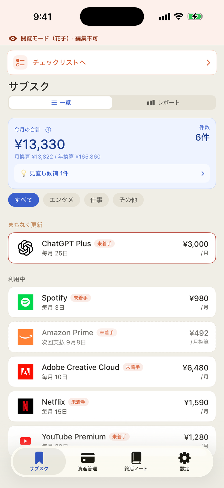
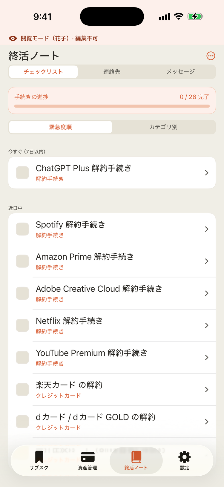
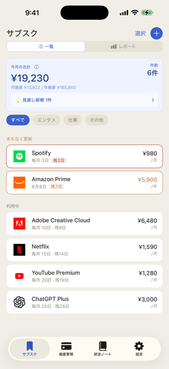
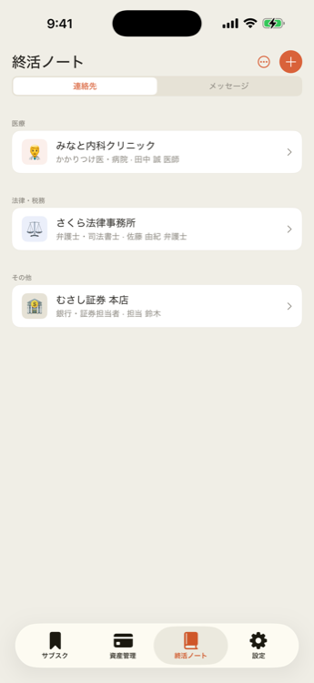

毎月いくら払っているか把握できていますか？Keepyは普段のサブスク管理から、家族への大切な記録まで、一冊にまとめます。



毎月自動で引き落とされていく金額。気づけばたくさんのサービスに課金していて、何を使っているかも把握できていない——そんな状態になっていませんか？
Netflix、Spotify、Disney+など、あらゆるサービスを登録。月払い・年払いを統一して「今月の合計」と「月換算額」を自動計算します。

月カレンダー形式で今月・翌月の支払日と金額を確認。年払いの更新月には自動でアラートバナーを表示し、うっかり高額引き落としを防ぎます。
サブスクの更新日・無料トライアルの終了・長期間使っていないサービスを自動で検知し、必要なタイミングで通知します。
もしものときに備えて、家族への連絡先・メッセージ・資産情報をまとめておけます。家族がログインするだけで、手続きに必要な情報がすべて揃います。

家族専用のパスコードでログインするだけで、オーナーが登録したサブスク・資産・メッセージを閲覧できます。編集はできないので、情報が書き換えられる心配もありません。
すべての情報はお使いの端末内にAES-256で暗号化して保存されます。外部サーバーへの送信は一切行いません。開発者もデータを見ることはできません。
iOS 17以上 · ¥2,480 買い切り · サーバーなし · 無料で試せます
App Storeでダウンロード（準備中）